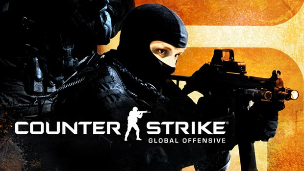
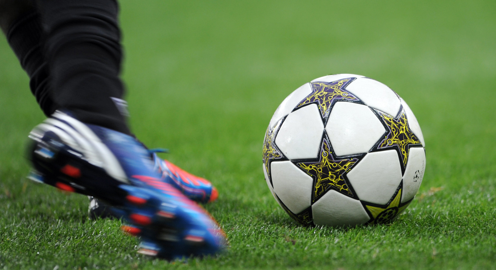

Hallo ik ben Lamrani Rayane en ben 21 jaar, geboren en getogen in vilvoorde. Ik ben in het secundaire afgestudeerd in de richting Boekhouden-Informatica. Ik heb maar 1 broer en hij heet Mohamed-Amine. Momenteel zit ik in odisee en studeer ik voor Toegepaste-informatica en hopelijk studeer ik daarin ook af.
Mijn Voornaamste hobby is gamen, waaronder het spel Counter-Strike global offensive. Ik vind het heel erg leuk en het is niet zoals elke typische shooter game, bij deze spel heb je echt reflexen en ervaring nodig om er als de beste speler uit te komen.
Ik speel graag ook voetbal vroeger zat ik in een club, maar nu niet meer door een blessure. Ik speel het natuurlijk nog steeds maar met familie en vrienden.
Ik doe aan fitness en meer bepaald body building, ik doe het vooral om af te vallen en ook om eeb gezond lichaam te krijgen